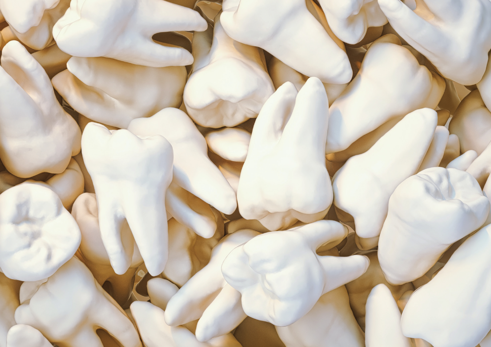

Emergencies
Incision and drainage is the standard treatment for dental abscess. The purpose of the intervention is to eliminate the infection and prevent complications.
Incision and drainage is the standard treatment for dental abscess. The purpose of the intervention is to eliminate the infection and prevent complications.